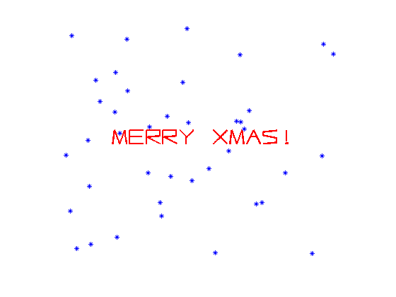

Merry Christmas!
Stefan Güttel & Nick Hale, 13th December 2011
(Chebfun example fun/XmasCard.m)
Chebfun has long been a popular medium for sending birthday wishes [1], and we now take this opportunity to wish you a Merry Christmas and Happy Holidays!
function XmasCard
"Kling Gloeckchen Klingelingeling..."
v1 = [ '777744557979777-5555227744444---' ... '2-2244004444222-5-5577225555444-' ... '2-224-6-7777222-449977669999777-' ]; v2 = [ '444400224545444-22222-2-00000---' ... '7-7-7-7-7754222-2-2-4-5-2245000-' ... '6-667-9-7777777-2-2-2-246666000-' ]; v3 = [ '44444444444444442222222200000---' ... '77777777777755552222222222220000' ... '2222000044447777666666666666777-' ]; % Convert to a tune (a chebfun quasimatrix) with STR2TUNE c1 = str2tune([ v1 , v1(1:32) ]); % Repeat c2 = str2tune([ v2 , v2(1:32) ]) - 12; % Subtract an octave and repeat c3 = str2tune([ v3 , v3(1:32) ]) - 24; % Subtract two octaves and repeat % Play with some chorus added to c1 c = [ c1-.09 , c1+0.09 , c2 , c3 ]; % Send the quasimatrix to CHEBTUNE [Y Fs] = chebtune(c,20); % Graphics plot(.6*scribble('Merry Xmas!'),'r','linewidth',2); axis([-1,1,-1,1]); axis off; set(gcf,'Color',[1,1,1]), hold on nr = 40; s = 2*rand(nr,1)+2i*rand(nr,1)-1-1i; p = plot(s,'b*'); for j = 1:1000, s = s + 0.001*randn(nr,1) - 0.005i*rand(nr,1); ind = find(abs(real(s))>1 | abs(imag(s))>1); s(ind) = 2*rand(length(ind),1)-1+1i; set(p,'XData',real(s),'YData',imag(s)); drawnow; pause(0.01); M(j) = getframe; end
% Write to file: (Uncomment the below if you wish to store the output of % this file to .wav and .gif files). % wavwrite(Y,Fs,8,'html/XmasCard.wav') % for j = 1:3:min(300,numel(M)) % im = frame2im(M(j)); % [imind,cm] = rgb2ind(im,16); % if j == 1; % imwrite(imind,cm,'XmasCard.gif','gif', ... % 'Loopcount',inf,'DelayTime',1e-5); % else % imwrite(imind,cm,'XmasCard.gif','gif', ... % 'WriteMode','append','DelayTime',1e-5); % end % end
end
function c = str2tune(str) %STR2TUNE Converts string of notes to a Chebfun % which can be played as a melody by CHEBTUNE. % % Example 1: % c = str2tune('0245--5420'); % chebtune(c); % % Example 2: % c = str2tune('0123456789abcdef'); % chebtune(c); % % See also chebtune. c = chebfun('NaN',[0,1]); lgth = length(str); left = 0; t_old = myhex2dec(str(1)); for j = 2:lgth, right = (j-1)/lgth; t = myhex2dec(str(j)); if t == t_old, continue; end; if ~isempty(t_old), c(domain([left,right])) = t_old; end; t_old = t; left = right; end if ~isempty(t_old), c(domain([left,1])) = t_old; end function s = myhex2dec(s) if ~strcmp(s,'-') s = hex2dec(s); else s = []; end end end
References
[1] http://www.maths.ox.ac.uk/chebfun/examples/fun/html/Birthday.shtml
[2] http://www.maths.ox.ac.uk/chebfun/examples/fun/html/AudibleChebfuns.shtml